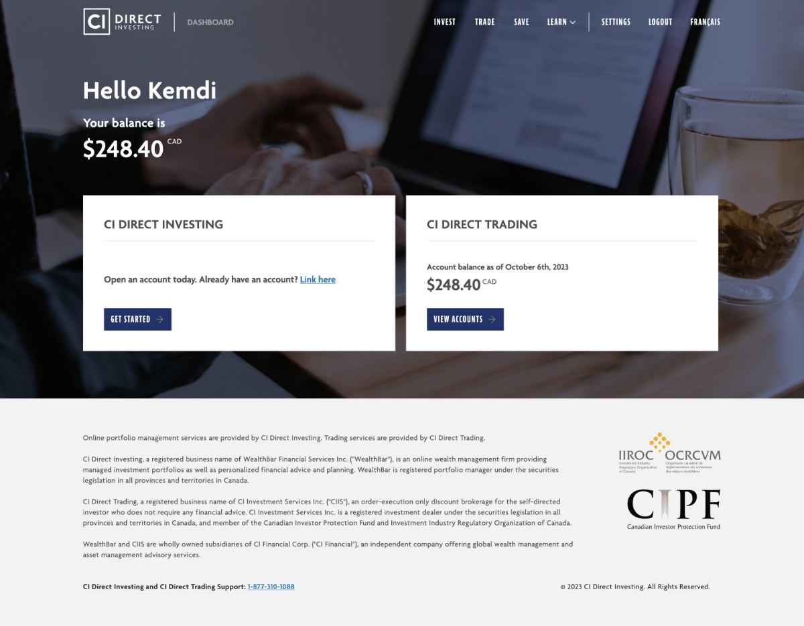
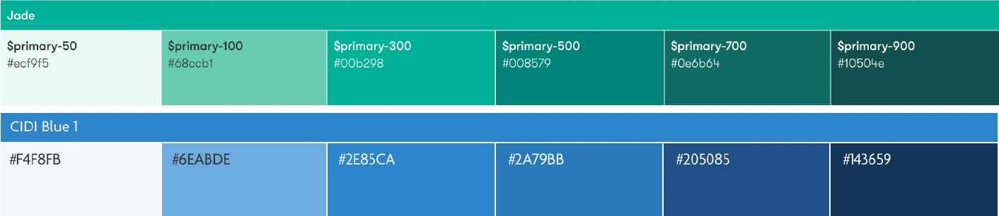
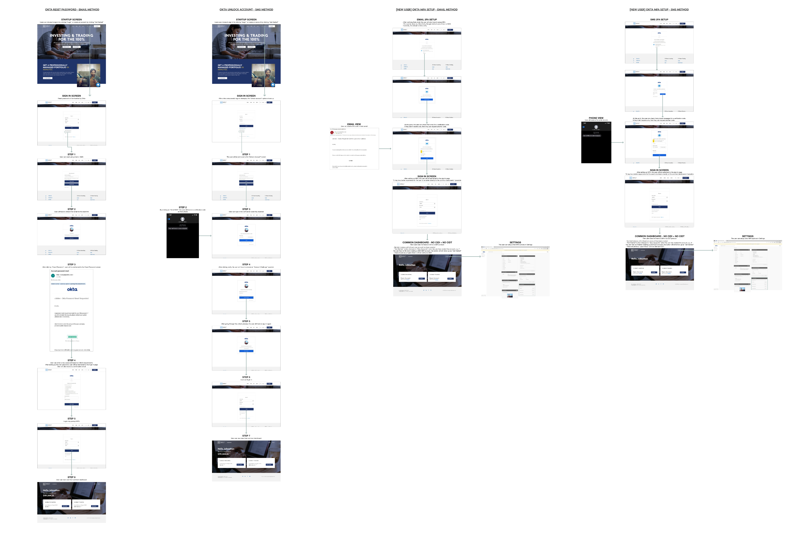
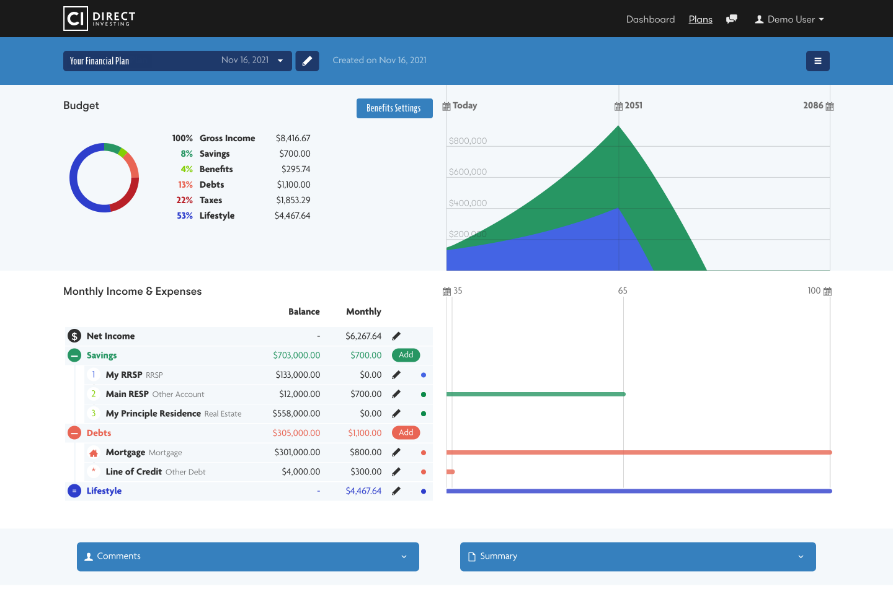

Intro
Wealthbar's integration into CI included the collaboration of CI Direct Investment (prev. wealthbar) with CI Direct Trading (prev. virtual brokers). Creating a dashboard that showcased this integration was a highly important stakeholder request. As a designer on the project, I was in several stakeholder meetings where we discussed what we were going for and the aim of the overall experience.


Process
The first step included updating the client onboarding process. This consisted of updating the user journey, color palette and icons

Design checklist:
- Global font colour: #303030
- All instances of Wealthbar green #00B298 should be updated to the CI blue #2e85ca
- Button Blue: #2A79BB
- Remove the bottom borders from all buttons
- Update hyperlink colours from green to #2873af
- Hover and Selection colours for buttons, hyperlinks, and inputs
- Loading screens
- Background colours on hover (buttons, links)
- Border colours
- Dropdown menus
- Error/Loss colour and font colours should be updated from #E96654 to #D93939
- The background colour for popup/hover message boxes should be updated from Wealthbar green to CI blue
My branding questionnaire
What are the top level brand goals for CI Direct and/or the Trading and Investing sub-brands?
- Typically brands will have a short list of descriptors for how they want the brand to be perceived – for example Trustworthy, Effective, Friendly, and Aspirational – with some copy about the most important target demographics, and how the brand is differentiating from competitors.
- In the brand one-pager we received a couple months back, it talks about wanting marketing photos to be thought-provoking, inspiring and sophisticated. Are those important brand goals for the CI Direct brands generally? Are there any brand goals that are more important than those?
It would be helpful for us to understand how CI Direct brand and each sub-brand plans to differentiate from the banks’ trading apps and other competitors like WealthSimple. Here is our current sense of the previous high-level brand and product direction for the two apps. In what ways should these descriptions change or be refined based on the vision going forward?
- For CI Direct Investing: To make investing feel approachable and welcoming. Priorities have included ease of use, adding comfort by making advisors accessible, and facilitating “effortless” savings that are long term oriented.
- For CI Direct Trading: Historically, the offering has focused on offering effective, lower-cost trading services to active traders. As we understand it, the focus is shifting towards retail traders, who are more sensitive to usability and intuitiveness, so we’ve been expecting these to be key product experience priorities going forward.
How do we want customers to see our offerings as being superior to the established banks’ investing products?
How do we want customers to see our offerings as being superior to products like WealthSimple?
Here are some more concrete brand adjectives - how important are these to the CI Direct brand experience? (1-5 rating)
- Simplicity
- Distinctiveness (that is, stands out from other brands)
Other than CID Investing focusing its colour scheme on the Cobalt brand colour and CID Trading focusing its scheme on the Sapphire colour, what other brand and product strategy differences are there between the two products?
We’ve historically thought of CI Direct’s most important target customers as professional Canadians roughly in the 30-55 year old age bracket. Is this the most important demographic when we’re considering how the design will be received?
Are there any visual references from apps or design systems that you’ve used or seen that you think are particularly good examples of some of the key brand goals?
Are there any other brand or competitive positioning goals you could share?


Colours
- #213469
- #205085
- #2A79BB
- #2E85CA
- #6EABDE
- #F4F8FB